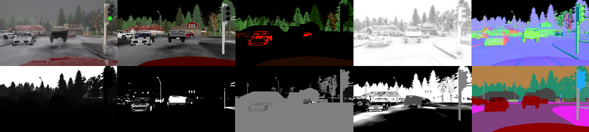

この論文は、広く使われているオープンソースシミュレータ CARLA の出力映像をリアルタイムに近い速度でリアル世界の映像スタイルに変換するプラグインツール CARLA2Real を提案する。CARLAのレンダリングパイプラインから得られるG-Bufferを活用し、Cityscapes・KITTI・Mapillary Vistasといった実世界データセットの外観に合わせる手法を採用。特徴抽出・セマンティックセグメンテーションの両実験でsim2realギャップが有意に縮小することを実証した。ツール・事前学習済みモデル・データセットは GitHub で公開されている。
シミュレータは自動運転をはじめとする自律システム研究において不可欠な存在だ。コスト効率の良い安全な試作環境を提供し、物理テストの時間を削減し、現実では希少なイベントのデータも大量に生成できる。
しかし、ゲームエンジンの技術進歩にもかかわらず、仮想環境と現実世界の間には依然として「sim2realギャップ」が残る。NVIDIAはこのギャップをコンテンツギャップ（オブジェクトの分布・スケール・幾何形状の差異）と外観ギャップ（センサー出力のピクセルレベルの差異）の2種類に分類している。とりわけオープンソースシミュレータは低コスト・低品質なアセットを使いがちで、リアルタイムレイトレーシングなど最新技術を実装していないため、外観ギャップが顕著だ。
本研究は、シミュレータのレンダリングパイプラインが生成する G-Buffer（Geometry Buffer）と呼ばれる中間情報を活用した画像変換手法（EPE）を用いて、シミュレーションデータのフォトリアリズムを向上させることを目的とする。G-Bufferには仮想オブジェクトのマテリアル・ライティング・幾何情報が豊富に含まれており、視覚的アーティファクトを抑えながら実世界データセットへの変換を可能にする。
本論文の主な貢献は以下の3点だ。
GANベースの画像変換でシミュレーション映像を強化し、sim2real外観ギャップを縮小する研究はいくつか行われてきた。Bujwidら（GANtruth）はSYNTHIAデータセットのフレームをCityscapesへ変換し、DeepLabV3+でのセグメンテーション精度をわずかに向上させたが、アーティファクトが多く改善幅は限定的だった。
Pahkらはカーブ保持支援向けにDCLGANをCARLAに適用してFIDスコアと車線セグメンテーション精度を改善。Ramらはpix2pixとDDPGを組み合わせたが、やはりアーティファクトの問題で精度向上はわずかだった。
最も強力な先行研究がRichterら（EPE）だ。EPEはG-Bufferを活用することでアーティファクトを大幅に抑制し、高品質な変換を実現した。本研究はこのEPEをCARLAシミュレータにリアルタイム統合したものである。比較対象として、G-Bufferを使わないVSAIT（Theissら）も実験に含めた。
EPE はRichterらが提案したフォトリアリズム強化手法であり、仮想環境の合成データをCityscapes・KITTI・Mapillary Vistasのスタイルへ変換する。各フレームのレンダリングパイプラインが生成するG-Bufferを活用することで、視覚アーティファクトのリスクを低減している点が従来手法と異なる。
訓練は2つの主要目標で構成される。①LPIPS損失：画像間の構造的類似性を評価し乖離にペナルティを与える。②知覚的識別器：実画像と合成画像の両方からVGG-16で特徴を抽出しリアリズムスコアを算出する。
G-Bufferと対応するGTラベルマップはG-Bufferエンコーダで処理される。エンコーダは複数のストリームで各クラスを個別に処理し（例：車両クラスはCar・Truck・Bus・Motorcycle・Bicycleを1チャンネルにまとめてエンコード）、生成した特徴テンソルをRAD（Rendering-Aware Denormalization）モジュール経由で強化ネットワークに渡す。実画像と合成画像のオブジェクト分布差に起因する識別器の偏りを抑えるため、FAISSライブラリによるk近傍パッチマッチングも採用している。
Theissらが提案したVSAITは、ペアなし（unpaired）画像変換手法であり、ベクトル記号アーキテクチャ（VSA）ベースの制約を敵対学習に導入して意味的フリッピング（空が木に変わるなどのコンテンツ変化）を抑制する。G-Bufferを使用しないため CARLA2Real との好対照な比較対象となる。
EPEモデルの訓練には、CARLAと同じ都市環境を扱う実世界データセットが必要だ。本研究では以下の3つを使用した。
訓練用合成データセットとして、CARLAシミュレータから20,014枚の画像を生成・公開した。データセットにはRGBフレーム・G-Buffer・GTラベルマップが含まれる。CARLAの同期モードでフレーム識別子による同期を保証しながら、20フレームに1枚を抽出。複数のCARLA Town・天候プリセット・車種・カメラアングルをランダム化してデータ分布のバランスを確保した。
データセットは未加工状態で公開されており、セマンティックセグメンテーション・深度推定・表面法線推定など多様なタスクへの応用が可能。G-Bufferは1テンソルにスタックし、GTラベルは29クラスから12チャンネルのone-hotエンコードマスクに圧縮した。
デフォルト設定ではRTX 4090環境でも推論に1.35秒かかり、13FPSの目標を大きく下回った。以下の改修で解決した。
CARLA2Realは、合成データセット生成・自動運転アルゴリズム評価・設定ファイルによるシナリオシミュレーションを一体的に支援するプラグインツールとして開発された。Unreal Engine 4のレンダリングパイプラインからG-Bufferをリアルタイムで取得・変換するためにマルチスレッド同期パイプラインを実装した。EPEをシミュレータにリアルタイム統合した例は著者らの知る限り世界初である。
CARLAのオープンソース性に起因するいくつかの制限がある。
低品質なTown01から新しいTown10HDまで、全CARLAタウンで適切な品質の変換結果が得られた。主な変換効果を以下に示す。
最も変換効果が大きいクラス（植生・車両・道路）はRichterらがGTAVで報告した知見と一致する。
CARLA2Realの効果を評価するため、実験用データセットをCARLA同期モードで生成した（20フレームに1枚を抽出）。Cityscapesモデルを変換ターゲットに選択し（変換結果の品質とCARLAとの互換性から）、オリジナルデータと強化データは同一コンテンツ・同一セマンティックアノテーションを持つよう設計した。
訓練には転移学習を適用（COCO/ImageNet事前学習モデルをファインチューニング）し、Town10HDとTown01の2タウンから各5,000枚を取得した。この2タウンはアセット品質が大きく異なるため、変換効果の定量化に適している。またVSAITとの包括的な定量比較のため、提案CARLAデータセットを使いVSAITも訓練・評価した。
CARLA2Realはカメラ出力のみを変換する（LiDAR・RADAR・IMUは非対象）。CARLAリーダーボードのSotAアルゴリズムでも強化学習のための特徴抽出にRGBカメラが多用されることから、RGBフレームのみを対象とした実験を行った。
次元削減なしのコサイン類似度（高次元空間でのペアワイズ比較）と、説明可能AI手法のGRAD-CAMを評価指標として採用した。
使用アーキテクチャはVGG-16・ResNet-50・Xceptionの3種（ImageNet事前学習＋ファインチューニング）。分類タスクは、入力フレームが7種類のデータセット（Town01・CARLA2Real Town01・VSAIT Town01・Town10HD・CARLA2Real Town10HD・VSAIT Town10HD・Cityscapes）のどれか予測するものとした。評価フェーズでは6種類の合成データセット各500フレームから最終畳み込み層の特徴を抽出し、Cityscapesとのペアワイズコサイン類似度を計算した。
表2のコサイン類似度から以下が明らかになった。
GRAD-CAM可視化（ResNet-50）では、オリジナルCARLAクラスでは識別モデルが限られた画像領域に注目するのに対し、CARLA2Realクラスでは人物・植生・道路・車など広範な領域を検査することが示された。sim2realギャップが縮小するにつれて、モデルが強化画像とCityscapesを区別するのが困難になっていることを示唆している。
セマンティックセグメンテーションは自動運転に直結するタスクであり、衝突回避・信号機・標識・歩行者への反応に必要な環境理解を提供する。本章では、特徴類似度の向上がセグメンテーション精度の改善にもつながるかを検証した。
PyTorchに統合されたDeepLabV3（ResNet-50バックボーン）を使用。COCO/PASCAL VOC事前学習重みをファインチューニングした（Adam, lr=1e-4, batch=8, 20エポック）。最良モデルはCityscapes検証セットの平均IoUで選択。
4種類の訓練データ（オリジナルCARLA・CARLA2Real・VSAIT・実世界Cityscapes）で訓練したモデルをCityscapes検証セットで評価し、合成・強化データとの相互検証も実施した。
表3・表4・表5・表6の結果から以下が確認された。
本論文では、CARLAシミュレータのフォトリアリズムを向上させてsim2real外観ギャップを縮小するアプローチを実装し、CARLA2Realとしてオープンソース公開した。EPEモデルのリアルタイム統合を実現し、合成データセット生成・自動運転タスク評価・シナリオシミュレーションを一体的に支援する。
実験では特徴抽出とセマンティックセグメンテーションの両タスクで有効性を実証した。G-Bufferを活用するCARLA2Realは、G-Bufferを使わないVSAITに対して多くの指標で優れた結果を示した。実世界Cityscapes評価でのDeepLabV3精度は、オリジナルCARLAデータ比で最大2倍に向上した。
一方、コンテンツギャップ（地域固有の交通標識など）は外観強化では解決できず精度向上に限界がある。今後はsim2realコンテンツギャップを縮小する他手法との組み合わせを検討し、CARLAにおける総合的なsim2realギャップのさらなる縮小を目指す。